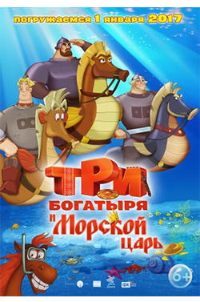

Будучи еще совершенно ребенком, мальчик по имени Бальтазар Брэтт подавал большие надежды. Ему получилось стать настоящей звездой, но скоро вся его известность быстро развеялась. Бальтазар стал бредить 80-ми годами, после чего окончательно свихнулся. Он считал себя мировой знаменитостью, а потому вновь и вновь напоминал о себе. На сей раз его планы зашли слишком далеко. Он захватил судно. Грю и Люси похоже потребуется нелегко, но они точно справятся.
Будучи еще совершенно ребенком, мальчик по имени Бальтазар Брэтт подавал большие надежды. Ему получилось стать настоящей звездой, но скоро вся его известность быстро развеялась. Бальтазар стал бредить 80-ми годами, после чего окончательно свихнулся. Он считал себя мировой знаменитостью, а потому вновь и вновь напоминал о себе. На сей раз его планы зашли слишком далеко. Он захватил судно. Грю и Люси похоже потребуется нелегко, но они точно справятся.
 Последнее время Дракула совсем загрустил от одиночества, и поэтому его дочь, Мэвис уговаривает отца отправиться в круиз. В итоге герой и его друзья попадают на шикарный лайнер с множеством развлечений. Капитаном корабля является загадочная и прекрасная Эрика, в которую граф влюбляется с первого взгляда. Однако Мэвис не нравится новая пассия отца. И не зря, ведь Эрика оказывается правнучкой самого Ван Хельсинга – главного врага всех вампиров и монстров.
Последнее время Дракула совсем загрустил от одиночества, и поэтому его дочь, Мэвис уговаривает отца отправиться в круиз. В итоге герой и его друзья попадают на шикарный лайнер с множеством развлечений. Капитаном корабля является загадочная и прекрасная Эрика, в которую граф влюбляется с первого взгляда. Однако Мэвис не нравится новая пассия отца. И не зря, ведь Эрика оказывается правнучкой самого Ван Хельсинга – главного врага всех вампиров и монстров.

У богатырей домашние неурядицы. Чтоб развеяться, они решают по-быстрому съездить в Китай за зубом дракона, эмблемой мудрости и силы. В это же время князь Киевский отправляется на прогулку совместно с конем Юлием за сокровищами морского царя, чтоб пополнить казну и «залатать бюджет». Да вот только морской царь решил повенчаться и для этого потопил Киев. И как теперь быть? Что несомненно поможет нашим героям? Дружба, смелость и, естественно, любовь.
 Этот огромный мрачный особняк все обходят стороной, с жителями этого места предпочитают не общаться. Аддамсы – далеко не самая обычная семья. Они носят исключительно темные одежды, предпочитают плохую погоду, почитают как богов серийных убийц и нередко всей семьей отдыхают на кладбище, считая это место самым подходящим. Мартиша Аддамс обожает срезать бутоны роз, оставлять только стебли с острыми шипами, и разводить хищные растения.
Этот огромный мрачный особняк все обходят стороной, с жителями этого места предпочитают не общаться. Аддамсы – далеко не самая обычная семья. Они носят исключительно темные одежды, предпочитают плохую погоду, почитают как богов серийных убийц и нередко всей семьей отдыхают на кладбище, считая это место самым подходящим. Мартиша Аддамс обожает срезать бутоны роз, оставлять только стебли с острыми шипами, и разводить хищные растения.